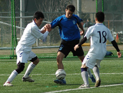
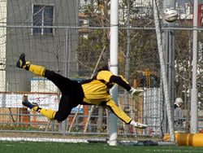
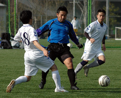
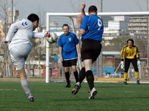

|
Fukuda Denshi, Saturday 4th April
Well I don't know what the Albion Old Boys had done in the past to upset Jetro FC, but the Japanese team must have some axe to grind into the gnarled skulls of the Aging Masters of the Beautiful Game. Or maybe they just get turned on by giving geezers a hard time. How else to explain how a team with only three wins out of fifteen games could give the Albion their toughest game of the season and put the Old Boys on the wrong end of a 4-3 scoreline in a highly entertaining encounter.
Once again the TML managed to provide its players with not just a game of football but with the opportunity to continue developing the kind of knowledge of the darkest outer reaches of the Kanto plain that would put any Tokyo taxi driver to shame. This time it was the Old Boys first trip to the exurbs of Chiba City for a game at the Fukuda Denshi ground. But though the trip out there was a pain in the strap-hanging arm for a west Tokyo based team, it has to be said that the ground itself was a treat, a state-of-the-art astroturf pitch right beside JEF United's home stadium.
As the game got going both sides were happy to pass the ball around and make best possible use of the luxuriant surface, but it soon became clear that it would be the wind rather than the pitch which dictated the pattern of the game.
In the first half it was at Jetro's back, propelling their forward momentum and pinning the Old Boys back in their own half for long periods. Indeed, despite Jetro's squad being entirely made up of Japanese players it's the name Effin Gale that should be recorded as providing the assist for the opening goal of the game as a wind-powered Jetro corner was uncharacteristically fumbled over the goal-line by Albion custodian Nobu Kouka.
With Albion finding chances hard to manufacture it was always going to take something a bit special to get them back in the game. Which is exactly what Sam Chamovitz provided. He was well outside the Jetro area as he met a right wing throw-in with his back to goal, allowing the ball to bounce across him as he turned to whack a powerful left foot shot into the top far corner of the Jetro net.
Cracking goal.
The Old Boys return to parity was short-lived though, as Gale again put pressure on the Old Boys defence, a misjudged headed clearance falling right at the feet of an unmarked Jetro forward, who smashed it home gleefully from the edge of the box. It could have gotten worse for Albion, but Kouka redeemed himself with a flying save, and the crossbar did a rattling good job from another Jetro piledriver.
So 2-1 down at the turnaround, but with the elements in their favor for the second half, the Old Boys were feeling the game was still there for the taking. And rightly so, as Albion drew level with a truly classy move that started with Hitoshi Ono winning possession on the left wing just inside the Jetro half. A strong run, a pass inside to Sam, a first-time flick to Naoki Ogasawara, another one touch pass to carve up the Jetro defense, and French wingeur Cyrille Sagalini showed sang froid admirable as he delivered the coup de grace.
The Old Boys got their go-ahead goal as another corner was blown into the net, this time with not even a goalkeeper's glove to impede Naoki's wicked inswinger. But Jetro got it back to 3-3 when the kami of the kaze showed he could also do a favor for the team playing into the wind. A speculative free kick lobbed aimlessly into the box could have been dealt with by either defender or goalkeeper. Both were left watching as a smart Jetro forward was the first to appreciate how the ball was holding up in the wind and nipped between the two of them to dink home a header.
And just when the flagging Old Boys needed it to blow stronger at their backs the wind turned sideways, allowing Jetro to finish the stronger of the two sides and steam in for all three points as some tired defending allowed a Jetro forward to fire home a late, late winner from close range. For the Old Boys, a pisser of a way to lose it after putting in a good performance against a fast, skillful, and (it goes without saying but I'll say it anyway) much younger team, but them's the breaks in a league where the teams are so evenly matched. With five games left in our ten-team division the Old Boys need six points to be guaranteed at least a third-placed finished - they also need three points to be mathematically safe from relegation.
Report by Terry Cooney
|